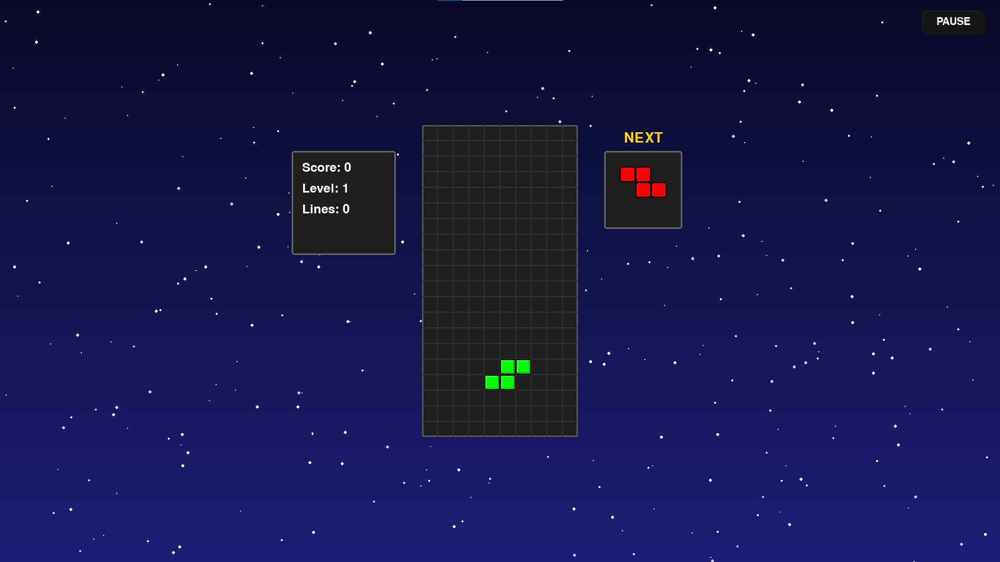

üéÆ √Ä propos de Tetris
Ce Tetris est une adaptation moderne du célèbre jeu de blocs, vous offrant une expérience de jeu fluide et des graphismes épurés. Empilez les blocs, faites des lignes et battez votre meilleur score !
N'hésitez pas à nous rejoindre sur notre serveur Discord si vous avez des questions ou souhaitez partager vos scores !
Rejoignez-nous sur Discord !⬇️ Prêt à jouer ? Téléchargez le jeu !
Cliquez sur le bouton ci-dessous pour télécharger le jeu Tetris (version la plus récente). Il s'agit d'un dossier compressé (.zip) contenant le jeu. Il vous suffira de l'extraire !
- Important : Vous téléchargerez un fichier compressé (.zip). Après le téléchargement, vous devrez le "décompresser" ou l'"extraire" pour accéder au dossier du jeu et au fichier exécutable.
⚙️ Guide de Lancement Facile
Commencez à jouer en quelques étapes simples :
- Téléchargez le Fichier : Cliquez sur le bouton "Télécharger Tetris" ci-dessus. Le fichier
Tetris_Game.zipse retrouvera dans votre dossier "Téléchargements". - Décompressez le Dossier : Faites un clic droit sur le fichier
Tetris_Game.zipet sélectionnez "Extraire tout..." ou "Décompresser". Choisissez un emplacement sur votre ordinateur. - Lancez le Jeu : Ouvrez le dossier "Tetris_Game" que vous venez d'extraire, puis double-cliquez sur
Tetris.exepour lancer le jeu. C'est tout !
Profitez du jeu !
üíª Configuration Requise (Minimum)
Voici ce dont vous aurez besoin pour profiter pleinement de Tetris :
- Système d'exploitation : Windows 7 / 8 / 10 / 11 (64-bit)
- Processeur : Intel Core i3 ou équivalent
- Mémoire vive (RAM) : 2 Go
- Espace Disque : Moins de 200 Mo d'espace libre
- DirectX : Version 9.0c
Le jeu est léger et fonctionne sur la plupart des configurations modernes.
üõ†Ô∏è D√©pannage Courant
Si vous rencontrez des difficultés :
- Avertissement Navigateur : Si le téléchargement est bloqué, cherchez "Conserver" ou "Télécharger quand même" dans la notification de votre navigateur.
- Antivirus : Votre antivirus pourrait mettre le fichier en quarantaine. Ajoutez le dossier extrait à la liste d'exceptions si vous nous faites confiance.
- Espace Disque : Assurez-vous d'avoir suffisamment d'espace libre pour l'extraction.
- Problèmes de Décompression : Assurez-vous d'utiliser un outil de décompression standard (comme celui intégré à Windows ou 7-Zip).
Si le problème persiste, notre équipe d'assistance Discord est là pour vous aider !